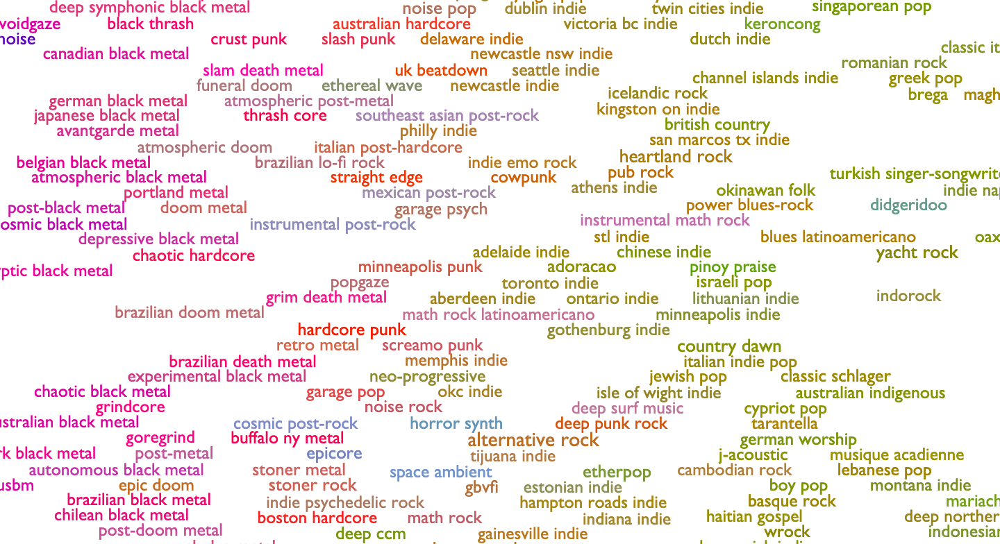
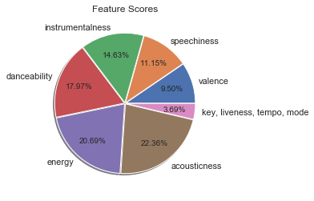
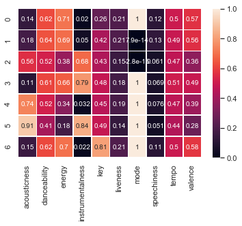
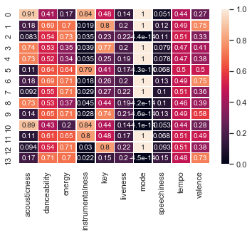

CS 4641 Team 15: Brian Glowniak, Joey Steffey, Kristen Lee, Ryan Pratt
Introduction
With the rise of digital streaming in the past decade, accessibility to music has increased drastically and in return so has the demand for people to explore music similar to what they already like. An accurate genre predictor for songs is crucial for music distributing sites such as Spotify, Apple Music, and Amazon Music. For our project, we wanted to explore what features are important when classifying the genre of a song as well as whether it is possible to predict the genre of a song. In the first part of our project, we used supervised learning algorithms to attempt to predict the genre of a song based on the features available to us. In the second part of our project, we used unsupervised learning to create our own clusters of songs defined solely with respect to our features rather than on the existing genre labels.
So many specific genres to choose from. What separates the basics? Credit: Yash Dua
Data
Our dataset is a collection of 232,725 songs pulled from Spotify's API with a total of 26 different genres and 18 features. We downloaded the dataset from Kaggle, and in order to use it we performed a few data cleaning operations. First, we removed 12 different genres entirely. There were two reasons for this: 1) many of these genres were "atypical" (e.g. Anime, Movie, Comedy, etc.) and 2) many of the songs in those specific genres were clearly erroneously or repeat classified. We wanted to focus our efforts on popular/common genres. Thus, we ended up with 132,096 tracks assigned to 14 genres. The genres included were Country, Dance, Alternative, Electronic, Folk, Hip-Hop, Indie, R&B, Classical, Rap, Raggae, Pop, Rock, and Soul. Apart from genre, we chose to use 10 other features for classification. All values were either already between 0 and 1 or were normalized to be between 0 and 1.
- Key: The key of the track using Pitch Class Notation. They are normalized between 0 and 1 with a 1/7 step between flat notes and a 1/14 step between sharp notes (0=A, 1/14=A#, 1/7=B, ... , 6/7=G).
- Mode: Mode of the track (0=Minor, 1=Major).
- Acousticness: Confidenceof whether the track is acoustic (i.e. can instruments be clearly heard).
- Danceability: How suitable a track is for dancing.
- Energy: How energetic a track is.
- Instrumentalness: Predicts whether a track contains no vocals. Highly instrumental tracks are closer to 1.0.
- Liveness: Detects likelihood of an audience in recording.
- Speechiness: Detects presence of spoken words w/o instrumentals.
- Valence: Measure of the positivity/happiness conveyed by a track.
- Tempo: Estimated tempo in beats per minute (BPM). Normalized to be between 0 and 1.
Excluded features include Track Name, Artist, Track ID, Popularity, Time Signature, and Duration. We believed these would not have as much of an effect on the genre of a song.
Part 1: Supervised Learning
The goal of this section was to see whether we can predict the genre of a song based on its characteristics. To do so, we tested five supervised learning methods (linear regression, logistic regression, decision tree, random forest, and a neural network (MLP)). To do this, we split our data into training (90%) and test (10%) sets. The results were scored using the R^2 score (the default sklearn score method) and are listed below:
- Linear Regression: 0.0851
- Logistic Regression: 0.3065
- Decision Tree: 0.3140
- Random Forest: 0.3581
- Neural Network: 0.3438
Accuracy scores for the five supervised learning algorithms
The best classifier out of the five we tried was Random Forest, but even that did not have a very good accuracy (~36%). The takeaway here is that classifying genres is apparently much more complex than using features like acousticness, danceability, etc. This intuitively makes sense - to further increase accuracy, we would need to introduce features like chord progressions and lyrical analyses. Another area of improvement would be to test out different sets of hyperparameters for these algorithms. We were able to do a few small tests, specifically on the neural network (number of hidden layers, number of iterations, etc.), but if we had more time we would run cross-validation to attempt to optimize hyperparameters for each of the algorithms.
Part 2: Unsupervised Learning
Using supervised learning, we concluded that the features in our data set were not enough to accurately classify genres as defined within the data. There can be a lot of overlap, and our features also don't seem to fully capture the differences between genres. For part 2, we decided to use unsupervised learning to explore the features themselves and to use them to attempt to define our own genre clusters.
First, we analyzed the importance of each feature in the data set when classifying. To do so, we used Select K Best to score each:
Scores from SelectKBest for each feature
Using the default score function (f_classif), we see that Acousticness, Energy, and Danceability are the three most important features. Key, Liveness, Tempo, and Mode are barely influential, if at all.
The next step is to begin defining our own genre clusters using KMeans. First, we use the elbow method to determine the optimal number of clusters given our data.

The loss begins to level out around 7-10 clusters. We choose 7 as our optimal cluster number, but a case could be made for 8 clusters as well.
With 7 clusters:
Each row of the above heat map corresponds to a cluster. Using the values of each center, we can create seven classifications with respect to the actual features instead of specific genre definitions.
Tempo and liveness are fairly similar across all of the clusters, which is consistent with the results of our feature scores. One observation is that centers with higher acousticness and lower energies correspond to relatively lower tempos, which makes sense.
Danceability and energy appear to be positively correlated, and both seem to be negatively correlated with acousticness and valence. Most clusters are in a major key.
We attempt to label these clusters with respect to their features below.
- 0: High D, Highest E/V, Lowest I, Low A, C Major
- 1: Highest D, High E/V, Low I/A, D Minor
- 2: Medium D, Low E/V, Medium I/A, D Minor
- 3: High D/E, Medium V, High I, Lowest A, D# Major
- 4: Medium D, Low E/V, Low I, High A, D Major
- 5: Lowest D/E/V, Highest I/A, D# Major
- 6: High D/E/V, Low I/A, F# Major
Next, we ran KMeans with the same number of clusters as genres in our original data set (14). This is mostly just for the sake of comparison.
With 14 clusters:
Lastly, we will use PCA to show that defining our own clusters with KMeans results in better clustering than using the predefined genre labels. We reduce our features to 2 components with PCA, then plot with colors first based on our genre labels, and then based on our optimal KMeans clusters.
First, we plot the two PCA components with each song colored according to its labeled genre. It is clear that the true genre labels don't do a very good job of clustering the songs

Next, we plot the two PCA components with each song colored according to its cluster defined by our optimal KMeans. It is clear that the songs are much more tightly clustered when done so this way. This shows that the features provided by our data set aren't effective in classifying by the strict predefined genres, but they can be used to define new types of "genres" characterized more by the intrinsic features of a song. One could go through and assign more specific labels based on the feature values listed.

Conclusion
For the first part, our outcome was not optimal as our genre predictions were not consistent. Our dataset did not provide us with the needed information to properly predict genre as our most accurate model was Random Forest with an average accuracy of 36%. For the second part, we found that defining "genres" based solely on the features provided resulted in much more well-defined clusters.
If our methods were refined, we believe that genre classifying would be a useful tool to music lovers everywhere to find new music. It could also be used by those interested in making their own music as a reference for genre baselines in different musical features. Furthermore, referencing the second part of our project, this could represent a new way of defining genre based on the intrinsic features of a song - users could explore songs that they like that are not bound by traditional genres (e.g. someone who usually likes happy songs with lots of energy)
The potential next steps we would take in furthering this project and obtaining better results would be to be more selctive with what features we are analyzing. Since our current feature analysis was not a consistently good genre predictor, re-evaluating which features are better predictors would be beneficial. This re-evaluation may mean cutting out some features but possibly also considering others that were not originally included in the analysis. In addition to being more selective with features, giving each feature a weight would also help our models better predict genre. This would allow us to still consider multiple features but would put more emphasis on the features that more directly correlate with genre prediction.
References
Kaggle, 2019, https://www.kaggle.com/zaheenhamidani/ultimate-spotify-tracks-db
Dua, Yash. Name That Game, Nov 2019, https://towardsdatascience.com/music-genre-prediction-with-spotifys-audio-features-8a2c81f1a22e
“Get Audio Features for a Track.” Spotify for Developers, Spotify, 2019
Ino, Mayumi. Apparatus for Producing a Chord Progression by Connecting Chord Patterns. 1 Oct. 1991.
Minamitaka, Junichi. Technique for Selecting a Chord Progression for a Melody. 8 June 1993.
Paiement, Jean-Francois, et al. “A Probabilistic Model for Chord Progressions.” Proceedings of the Sixth International Conference on Music Information Retrieval (ISMIR), 2005.